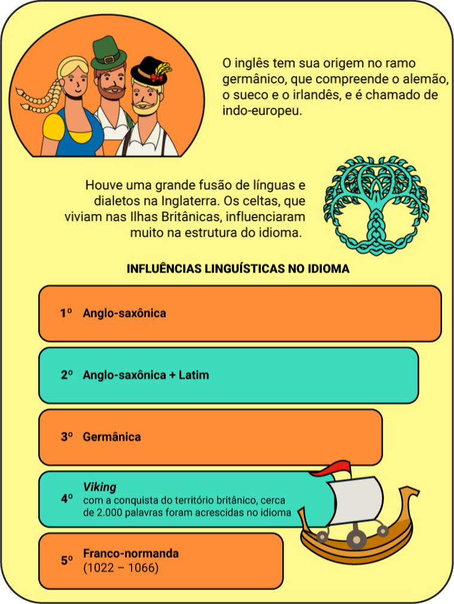

Olá, prezados estudantes! Sejam bem-vindos aos estudos da área de Linguagens e suas Tecnologias.
Ao longo desta etapa, será construído o conhecimento sobre importantes temas, que serão relevantes para sua formação, bem como para sua cidadania. Sua participação é muito importante durante os estudos e as atividades propostas nas disciplinas de língua portuguesa, literatura, língua inglesa, arte e educação física, pois todos os materiais foram elaborados com cuidado para seu estudo.
Dessa forma, uma pergunta que parece crucial neste momento é:
Dessa forma, uma pergunta que parece crucial neste momento é:
Crucial - cru·ci·al
Adjetivo de dois gêneros - m+f
1 V cruciforme.
2 Que é decisivo.
3 Que é inevitável.
4 Que ultrapassa os limites habituais.
5 De grande importância para o destino de algo ou de alguém.
Por que você precisa estudar linguagens e suas tecnologias no ensino médio?
Considerando que, desde criança, aprende-se que “porque sim” não é resposta e que nenhuma escritura sagrada dita quais são os conteúdos e os aprendizados da educação básica, um motivo deve existir para que esses conhecimentos estejam no currículo dessa etapa de ensino.
E esse motivo é bastante simples: as pessoas são seres sociais, logo, a maneira como se comunicam é essencial para que possam mover-se com autonomia na sociedade.
Em outras palavras, as linguagens estão em todos os lugares e são utilizadas em todos os momentos da vida. São as decisões acerca delas que influenciam um artista a utilizar determinados tons de cores em seu quadro, que fazem com que uma mensagem seja compreendida com um simples encolher de ombros ou que guiam a escolha pelo tipo de roupa usada em um casamento ou em uma entrevista de emprego.
Em suma, é por meio das linguagens que o mundo é apreendido e é com elas que nos expressamos perante ele.
Dessa forma, compreender esse elemento, bem como seus recursos e tecnologias, garante que se possa tanto apreender as mensagens do mundo com maior nitidez quanto ter uma comunicação adequada aos contextos que a vida em sociedade impõe a todos.
Com isso, adquire-se a oportunidade de intervir na sociedade em que se vive. Em outras palavras, a partir do momento em que você se apropria das ferramentas das linguagens, é possibilitada a chance de lutar por mudanças consideradas essenciais onde você vive. Em suma, o estudo das linguagens demonstra sua importância para a transformação da vida tanto individualmente quanto coletivamente, podendo abrir ou fechar portas. Aqui as portas estão abertas, para que um ótimo trabalho seja feito. No próximo módulo, você aprenderá mais a respeito do que é a linguagem.

Quantas vezes vocês já devem ter ouvido ou, até mesmo, falado frases como “Eu não sei falar direito” e “Eu não sei escrever direito”, como se a pessoa não soubesse se comunicar, mas a realidade não funciona assim. Na escola, aprendemos a chamada “norma padrão”, que são as regras que determinam o uso correto da língua portuguesa, porém, é importante lembrar que elas devem ser utilizadas nas situações formais de comunicação, como a escrita de um texto, a elaboração de um documento, a apresentação de uma palestra, entre outros. Entretanto, a norma padrão não é a única forma de linguagem disponível para você se expressar.
Diariamente, há a necessidade de você se comunicar com sua família, amigos, colegas de trabalho ou de escola, entre outros, e você sabe como isso é possível? Nas situações informais de comunicação, é usada a linguagem informal, ou seja, sem a preocupação com o uso normativo da língua, porque o principal objetivo dela é a comunicação, fazer com que as pessoas a entendam. Dessa forma, é usada uma linguagem espontânea, mais despojada, nas situações informais. Em cada situação comunicativa, ou em cada contexto, adapta-se a forma de comunicação, por isso, não existe uma linguagem certa e outra errada, mas uma linguagem para cada situação. É a capacidade de comunicar-se com competência.
É importante salientarmos que, quando falamos em linguagem, não estamos nos referindo apenas à língua falada, e sim ao conjunto de fatores que constituem o processo de comunicação. Por exemplo, costumamos utilizar uma roupa mais despojada para ambientes informais, ao mesmo tempo que utilizamos roupas mais sóbrias para ambientes formais. As roupas, assim como a fala, também comunicam algo e devem estar de acordo com o contexto em que estão inseridas.
Em outras palavras:
Linguagem é o meio de comunicação de ideias, sentimentos, valores etc. com a utilização de diferentes formas de símbolos, não apenas a fala e a escrita, mas também gestos, cores e diversos tipos de expressão artística, como a dança, a pintura, a música, entre outros.
Língua é um sistema organizado de sons e gestos que possibilitam a comunicação.
Passe o mouse ou toque para ver a tradução.
Tradução: Olá, pessoal! Bem-vindos. Estou muito feliz por estar aqui com vocês nesta nova oportunidade de aprendizado que vocês escolheram. Podem contar comigo sempre que precisar. Vamos aprender juntos. Estou aqui para auxiliá-los
Hello, people! Welcome. I am so happy to be here with you in this new opportunity of learning that you have chosen. You can count on me whenever you need. Let’s learn together. I am here to help you.
Para compreender o funcionamento desta língua adotada universalmente, faça um breve passeio por sua história.
O inglês tem sua origem no ramo germânico, que compreende o alemão, o sueco e o irlandês, e é chamado de indo-europeu.
Houve uma grande fusão de línguas e dialetos na Inglaterra. Os celtas, que viviam nas ilhas britânicas, influenciaram muito a estrutura do idioma.
Observando os idiomas que originaram o inglês, pode-se perceber por que algumas palavras parecem familiares, uma vez que o português tem origem no latim.
Ao compreender de forma mais clara como o inglês funciona, é possível utilizá-lo para a comunicação e a compreensão de diversos assuntos pertinentes ao dia a dia.
Na sociedade antiga, apenas três idiomas eram adotados: o clero utilizava o latim, a nobreza utilizava o francês e o proletariado utilizava o inglês.
Durante cerca de trezentos anos, o inglês foi utilizado apenas verbalmente, pois, na época, apenas a nobreza tinha acesso à educação. Esse fato fez com que o inglês fosse formado, gramaticalmente, por estruturas muito simples quando comparado com outros idiomas. O uso de uma mesma palavra em diferentes classes gramaticais é um exemplo, veja:
TO WATCH - verbo
To watch: verbo (assistir)
I watch TV: Eu assisto à TV
WATCH - substantivo
Watch: substantivo (relógio de pulso)
This is my new watch: Este é o meu novo relógio
Mas então como saber quando o significado é um ou outro?
Keep calm! No decorrer das aulas, você perceberá que, na língua inglesa, o contexto da fala é muito importante. As palavras sozinhas têm seu significado próprio, porém, quando empregadas em frases, podem assumir diferentes significados. No início, pode parecer difícil, mas isso facilita o uso.
A linguagem é considerada um sistema e, por meio dele, os sentimentos são expressados. Para isso, são empregados os códigos verbais e não verbais para comunicar ideias. Veja como funcionam.
Os códigos verbais, ou a linguagem verbal, são o uso da escrita ou da fala como meio de comunicação. Ao falar com alguém ou ler um livro ou revista, você está utilizando a palavra como código. Esse tipo de linguagem é conhecido como linguagem verbal, sendo a palavra escrita ou falada a forma pela qual ocorre a comunicação. A linguagem verbal é a forma de comunicação mais presente no cotidiano, pois, por meio dela, ideias e pensamentos são expostos aos outros.
Imagine que, na aula de língua inglesa, a professora trouxe um vocabulário da saúde, que o professor de educação física já havia mencionado também em sua aula, pois são termos muito conhecidos que serão trabalhados no tópico de estrangeirismos.
espera p/ ODA
Desse modo, a linguagem verbal foi utilizada tanto na aula de língua inglesa como na aula de educação física, para se trabalhar os estrangeirismos com o tema saúde. Esse tipo de linguagem privilegia a palavra, também oral, por exemplo, uma letra de música, que também é um exemplo de linguagem verbal.
Estrangeirismo é uma palavra pertencente a outro idioma usada no português. Dessa forma, será analisado o uso de palavras originárias do inglês. Assista ao vídeo a seguir.
O estrangeirismo pode ser usado na sua forma original, quando não há necessidade de tradução para compreendê-lo, ou pode ocorrer um processo de aportuguesamento da palavra, quando sua grafia é alterada.
Vejam alguns exemplos de palavras utilizadas na sua forma original.
Internet
Drive-thru
Download
Video game
On sale
Possivelmente, você pensou em muitas outras palavras, não é mesmo?
Identifique na figura 2 a seguir algumas palavras do inglês que não requerem mais a tradução para o português.
Agora veja alguns exemplos de palavras que foram aportuguesadas.
O uso dessas palavras ocorre devido a diversas razões, como o avanço tecnológico, a crescente globalização, o processo de assimilação cultural natural, veiculação de propagandas, entre outras.
Conforme você assistiu no vídeo, os estrangeirismos fazem parte do dia a dia. É comum ver, por exemplo, vitrines com palavras estrangeiras que não requerem tradução.
Selecione a alternativa que contém um exemplo de estrangeirismo utilizado na área da saúde.
A linguagem não verbal, ou códigos não verbais, é outra forma de comunicação em que o código utilizado são os símbolos ou signos. Não se utiliza a palavra, seja ela escrita ou oral, mas outros meios comunicativos, como placas, figuras, gestos, cores, sons, ou seja, signos visuais e sensoriais.
Imagine que, na aula de literatura, o professor apresente o tema Modernismo, que foi um grande movimento cultural, que influenciou a cena artística e a sociedade brasileira na primeira metade do século XX, principalmente na literatura e nas artes plásticas. Para complementar os estudos sobre o Modernismo, a professora de arte trouxe uma obra bastante representativa desse movimento, o quadro “Operários”, da artista Tarsila do Amaral, conforme a figura 3 a seguir.
Percebem-se, na obra de Tarsila do Amaral, elementos não verbais que “falam” mais que palavras, ou seja, as pessoas retratadas no quadro representam a diversidade cultural do povo brasileiro que, no contexto da obra, são os operários que trabalham nas fábricas com suas chaminés, pintadas ao fundo do quadro. Importante ressaltar que esses operários dão o título à pintura, feita em 1933.
Dessa forma, a linguagem não verbal, que está presente no dia a dia nas placas de trânsito, no sinal para o ônibus parar, na conversação em Língua Brasileira de Sinais (Libras), no emoji utilizado nas redes sociais, entre outros, também está presente nas aulas, pois, muitas vezes, a comunicação ocorre sem uma única palavra ser dita. Então, lembre-se de que a comunicação não verbal ocorre por meio da dança, da pintura, de desenhos, de sinais ou signos, das expressões do rosto, entre outros. Além desses, a linguagem não verbal se apresenta em posturas corporais, imagens, figuras, placas, semáforos, bandeiras, cores, gestos, buzinas, apitos, sirenes etc.
Conhecer o conceito de linguagem não verbal é tão importante quanto saber o conceito de linguagem verbal, pois a linguagem não verbal é uma forma de comunicação muito presente no cotidiano. Esse tipo de comunicação ocorre por meio de imagens, em muitos momentos, seja em uma placa de trânsito ou uma propaganda de televisão.
Para entender melhor o conteúdo, assista ao vídeo a seguir.
Para melhor compreensão do conteúdo, primeiramente será discutido o conceito da palavra signo.
Os signos são criados pelo homem para a representação de ideais, são sinais que significam algo. Podem ser classificados em símbolos, ícones e índices.
Ícone é um signo que renuncia a existência de um objeto, pois pode significar o objeto. É algo que simboliza alguma coisa. Ex.: imagem de um cão, imagem do fogo.
Índice é um signo que se aproxima por meio de alguma ligação com a existência. O índice, ao contrário do ícone, necessita de algo para existir. Ex.: o som do latido do cachorro e a fumaça.
Símbolo é um signo que existe por meio de uma regra, convencional ou não. O símbolo refere-se ao que pode concretizar a ideia ligada à palavra, ou seja, é tudo o que representa, sugere ou substitui alguma coisa. Ex.: a palavra cão e o símbolo chinês da palavra fogo.
Agora que você já sabe o conceito de signo, estudará sobre a cultura brasileira e sua representatividade!
Referenciar os diversos signos que podem representar o Brasil significa falar de todas as coisas que lembram o Brasil. Pode ser referências a palavras, músicas, objetos, obras de arte ou, até mesmo, arquiteturas locais.
Embora a bandeira nacional seja um dos maiores símbolos brasileiros, não seria incorreto afirmar que o país pode ser representado por diversos outros símbolos contidos nas mais diversas manifestações artísticas existentes. Isso significa que o Brasil poderia ser representado por elementos contidos dentro de sua cultura.
Exemplos de elementos que representam o Brasil:
Outro tipo de linguagem utilizada é a linguagem mista, que é a combinação de elementos das linguagens verbal e não verbal ao mesmo tempo. Esse tipo de linguagem é encontrado em histórias em quadrinhos, charges e anúncios publicitários. Imagine que a professora de língua portuguesa propôs uma discussão sobre as medidas de proteção contra o coronavírus e trouxe para a aula a seguinte propaganda, elaborada pela Secretaria da Saúde do Estado do Rio Grande do Sul, em 2020:

Essa propaganda apresenta elementos verbais, com a mensagem escrita, bem como elementos não verbais, com as duas mãos, que representam o cuidado que se deve ter com a higiene delas no combate à contaminação pelo coronavírus. Para que mensagens sejam comunicadas de forma clara, muitas vezes, utiliza-se a linguagem mista para se estabelecer uma comunicação eficiente.
Já na educação física, em relação à linguagem, considera-se a linguagem corporal, ou seja, a comunicação do corpo por meio de expressões, gestos e movimentos corporais. Agora reflita sobre a educação física como componente que estabelece relação entre a prática corporal com o propósito para uma vida mais saudável e ativa.
A linguagem corporal estimula a comunicação em distintas culturas e contextos. Como forma de participação e interação social, a linguagem corporal propicia o reconhecimento de si mesmo e do outro indivíduo. É por meio do movimento e da cultura corporal que as pessoas desenvolvem suas interpretações referentes aos conteúdos de jogos, danças, esportes, lutas e ginásticas, entre outros.
A expressão corporal, segundo Stokoe e Harf (1987), é uma linguagem através da qual o ser humano expressa sensações, sentimentos e pensamentos com o seu corpo. Assim, a educação física, especificamente, acaba rompendo com o foco nos aspectos biológicos e nas práticas esportivas de alto rendimento para compreender as práticas corporais no âmbito da cultura, lazer e saúde.
Para entender melhor a diversidade cultural brasileira, é necessário considerar que sua estrutura social foi alicerçada nos costumes e comportamentos de diferentes povos, devido à colonização portuguesa e às inúmeras migrações. Embora o Brasil seja um país único, pode-se considerar que cada região tem hábitos e comportamentos característicos, com uma identidade quase própria.
Cada região apresenta diferentes comportamentos, consequência da cultura que prevalece em cada localidade. Por esse motivo, é possível encontrar variações tão distintas para uma mesma manifestação dentro do país.
Clique ou toque para visualizar o conteúdo.
Alicerçar a·li·cer·çar Verbo transitivo direto 1 Preparar o alicerce de: A construtora alicerçou as paredes do prédio. 2 FIG Fundamentar ou estabelecer algo com bases sólidas: O doutorando alicerçou sua tese. 3 FIG Tornar sólido; fortalecer: Os primos alicerçaram os laços de família.
Costumes
São práticas que se tornaram habituais em uma sociedade.
Tradições
É a transmissão de costumes, comportamentos, memórias, rumores, crenças e lendas para pessoas de uma comunidade. Seus elementos transmitidos passam a fazer parte da cultura.
Conforme mencionado, o Brasil é um país formado pela fusão das mais diferentes culturas. Originalmente habitado pelos povos indígenas, sofreu grande influência cultural europeia, devido à colonização portuguesa, além da escravização dos povos africanos em solo brasileiro e a imigração dos povos italianos, alemães e holandeses, entre outros. Por esse motivo, a cultura brasileira é tão vasta e diferente. Embora seja falada a mesma língua (português), cada região pode apresentar diferentes gírias e palavras, por exemplo.
A região Norte é formada pelos estados do Acre, Amapá, Amazonas, Pará, Rondônia, Roraima e Tocantins. Possui forte influência dos povos indígenas, como as tribos Marajoara e Santarém, especialistas na construção de cerâmicas. É uma região famosa pela festa popular de Círio de Nazaré e pelo Festival de Parintins, também conhecido como a Festa de Boi-Bumbá. Na culinária, destaca-se a utilização da mandioca e dos peixes de água doce.
A região Nordeste também tem influência dos povos indígenas, destacando-se ainda as culturas africanas, principalmente nos cultos e crenças religiosas. É uma localidade rica em manifestações folclóricas e festas populares, como, por exemplo, o frevo e as festividades de São João. O artesanato nessa região também se destaca, assim como a literatura de cordel e as músicas populares. Sua cultura também pode ser caracterizada pela culinária, pelo dialeto, pelas vestimentas e pela prática da capoeira.
A região Centro-Oeste do Brasil é composta pelos estados do Mato Grosso, Mato Grosso do Sul, Goiás e o Distrito Federal. Sua cultura é diversa e teve forte influência dos países com os quais faz fronteira, a Bolívia e o Paraguai, assim como dos povos indígenas, mineiros e gaúchos.
As festividades dessa região são conhecidas pelo cunho religioso, como a Folia de Reis e as Cavalhadas. Essa última se baseia na encenação de uma batalha medieval apresentada como desfecho para a vitória dos cristãos sobre os mouros e a aceitação deles para o cristianismo. A dança Siriri, que é executada somente por mulheres, também se destaca. Essa dança é popular por lembrar as antigas brincadeiras indígenas. Já a música dessa região é conhecida pelo sertanejo e a roda de viola.
A culinária típica se destaca pelos pratos arroz boliviano, caribéu, farofa de banana, sopa paraguaia, arroz carreteiro e farofa de carne.
Imagem com cinco mulheres em destaque, dançando à margem de um rio. Estão usando vestido longo colorido rosa com a parte superior e a barra floridas. Ao fundo, há alguns homens de chapéu, dançando e aplaudindo a dança.
A região Sudeste tem traços típicos da fusão de diversas culturas. Destacada por estados como Minas Gerais, São Paulo e Rio de Janeiro, apresenta festividades típicas, como o Carnaval e as Festas do Divino, além das escolas de samba. Na culinária, são típicos da região o pão de queijo, o feijão tropeiro, a farofa e o bolinho de bacalhau.
Já na região Sul, existe uma maior popularidade de costumes típicos das culturas italiana e alemã, decorrentes da imigração desses povos para essa região. É nessa região que encontramos festividades, como a Festa da Cerveja (Oktoberfest) e a Festa da Uva. A culinária sulista sofre influência das culturas italiana e germânica, embora as maiores representações culinárias da região sejam o churrasco gaúcho, que se originou das comunidades indígenas jesuítas, e o chimarrão, que foi uma herança dos povos tupis-guaranis que habitavam a região dos Pampas (Brasil, Uruguai, Argentina e Paraguai).
Bandeirinhas de São João, berimbau, cordel, vestimenta típica baiana, acarajé, o Pelourinho e tudo mais que lembre essas regiões.
O chimarrão, a vestimenta gaúcha, o cavalo, a uva, o carnaval carioca e paulista, as cores das escolas de samba, o Cristo Redentor e todos os outros elementos que remetem a essas regiões.
Clique ou toque sobre cada região para saber mais detalhes sobre ela.
Conforme visto anteriormente, o Brasil é um país rico em diversidade cultural, simbolizado por vários elementos, mas o que é diversidade cultural?
Para estudar mais o tema, assista ao vídeo a seguir.
Para entender o que é diversidade cultural, primeiramente é necessário desmembrar essas duas palavras e conhecer seus significados individualmente. Diversidade nada mais é do que a variação de coisas diversas. É tudo aquilo que existe de diferente, são as múltiplas variedades existentes. Como exemplo podemos citar as diversas cores existentes (vermelho, amarelo, azul), os diversos modelos de transporte (carro, ônibus, moto), os diversos tipos de frutas (maçã, uva, melão), as diversas línguas (alemão, italiano, português) e assim por diante. Já a palavra cultura vem do latim cultura, que está ligada à noção de cultivo. Cultura, em sentido social, está ligada a comportamentos, conhecimentos e tradições de um determinado grupo. É a forma de “cultivar” as raízes e preservar os mesmos hábitos de um povo. A palavra cultura, no contexto em que será estudado, refere-se a comportamentos, costumes e tradições vividos por um mesmo povo, transmitidos de geração em geração. Entre os exemplos estão as vestimentas, a culinária, as manifestações religiosas, as tradições, as etnias, entre outros elementos. Por sua vez, diversidade cultural diz respeito à existência de uma grande variedade de culturas dentro de uma mesma sociedade.
Manifestação artística é toda forma de manifestação de ideias. Os diferentes ramos das manifestações são: arte, fotografia, teatro, dança, música, poesia, literatura, histórias em quadrinhos, filmes, novelas, circo, entre outros.
No artesanato, a manifestação artística se encontra em cerâmicas, traçados, rendas, bordados, pinturas, entalhes, gravuras, entre outros.
Existe uma infinidade de manifestações populares brasileiras, e pode-se encontrá-las em danças típicas, músicas locais, regionais e nacionais, artesanato, literatura, linguagens e gírias, arquitetura, monumentos e cidades históricas, festejos, vestimentas, culinária, crenças populares e esportes, entre outros.
Depois de conhecer os tipos de linguagem e a importância deles para a comunicação, seu novo desafio será estudar os gêneros do discurso. Para cada ato comunicativo no qual você está inserido há um determinado gênero usado para a comunicação. Aprenda mais a respeito desse importante tema a seguir.
Para o filósofo russo Mikhail Bakhtin (1895-1975), os gêneros do discurso resultam em formas-padrão “relativamente estáveis” de um enunciado, determinadas histórico-socialmente (2016). Segundo o autor, o homem só se comunica, fala e escreve por meio de gêneros do discurso. Inclusive em conversas informais, o discurso é moldado pelo gênero em uso.
Por que esse conceito é importante? No estudo dos tipos de linguagem, percebe-se que a linguagem é adequada ao contexto comunicativo que se está inserido, ou seja, para cada situação, uma forma de comunicação é utilizada, um tipo de gênero do discurso é escolhido para ser compreendido pelo outro. Veja alguns exemplos para entender melhor o conceito de gênero.
Quando você precisou deixar um aviso antes de sair de casa, já deixou um bilhete escrito na geladeira? Então, para deixar esse aviso para algum familiar (e isso é uma situação de comunicação, pois você precisa comunicar algo para alguém), foi utilizada uma linguagem informal que se adapta ao gênero bilhete. Dessa forma, escolhe-se o gênero bilhete para a comunicação com a família (situação comunicativa).
espera p/ ODA
Em uma aula com o professor de educação física, ele explicou sobre como a prática de exercícios físicos é importante para a saúde. Essa aula expositiva, ou seja, oral, é um gênero do discurso, pois o professor adapta a sua fala para que os alunos entendam a relevância do tema para a saúde.
Sobre esse mesmo tema, a professora de artes apresentou a diversidade, explicando como, ao longo da história, o padrão de corpo (ou a estética) mudou conforme a época da sociedade. Para explicar, a professora trouxe um texto, que é um gênero do discurso, já que há uma linguagem específica nele para se entender o tema estudado em aula, que é a situação comunicativa.
A professora de língua inglesa apresentou o tema saúde em um vocabulário com diversas palavras em inglês para que os alunos construíssem frases usando essas palavras, em conjunto com outros conteúdos já estudados. Para essa situação comunicativa, “aula de inglês”, o gênero escolhido foi “vocabulário”. Na aula de literatura, o professor trouxe um poema concreto também sobre o tema saúde.
Portanto, nessa aula (situação comunicativa), o professor de literatura mobilizou o gênero poema concreto para se comunicar com seus alunos. Ainda sobre o tema “saúde”, a professora de língua portuguesa trouxe a propaganda a seguir para a aula.
![Cartaz com uma mulher preta, idosa, com cabelos pretos e curtos, brincos pequenos, vestindo camisa azul e sorrindo. Abaixo, na parte mais central, em um fundo verde, está escrito “previna acidentes” em letras brancas, na linha de baixo, em letras amarelas, está escrito “pessoas idosas têm risco de sofrer quedas graves”. Abaixo desse texto, constam os logotipos das entidades que participam da campanha: Conselho Municipal dos Direitos da Pessoa Idosa, Fundação de Ação Social e Prefeitura de Curitiba. No rodapé do cartaz, há o site da campanha “idososcuritiba.com.br”.](assets/6/figura8.png)
O gênero do discurso “propaganda publicitária” foi mobilizado para o ato comunicativo “aula”, pois, a partir desse gênero, podem ser estudados argumentação, linguagem mista, entre outros conteúdos que se relacionam com língua portuguesa e demais disciplinas.
Não se esqueça: para que a comunicação ocorra e se estabeleça com eficiência, além da situação comunicativa e do gênero do discurso, é necessário entender como se processa a comunicação. Sim, ela é um processo realizado diariamente, e há elementos fundamentais para a sua efetivação. Conheça-os a seguir.
Todos os dias, você comunica algo a alguém, e essa comunicação sempre tem um objetivo. Uma conversa informal, uma palestra, um aviso, uma mensagem nas redes sociais etc., todas essas situações comunicativas têm um objetivo, pois, do contrário, não ocorreriam. Além disso, para que esses gêneros discursivos ocorram, há elementos da comunicação envolvidos.
Na primeira metade do século XX, um grupo de linguistas decidiu investigar as funções que a linguagem cumpria na vida das pessoas. Um desses estudiosos era o linguista russo Roman Jakobson (1896-1982). Ele criou um modelo para descrever a comunicação humana, conhecido como “Modelo comunicativo de Roman Jakobson”, conforme a imagem a seguir.
![Imagem de duas pessoas conversando. À esquerda, uma mulher de pele avermelhada e cabelos pretos, longos, blusa roxa; à direita, um homem de cabelos pretos, ondulados e curtos, pele clara, blusa roxa. Na parte superior, em letras maiores, dentro de um círculo rosa, aparece a frase “elementos da comunicação”. Entre as duas pessoas, há as palavras “contexto” e “mensagem” e uma linha pontilhada entre elas, ligando-as. Abaixo há as palavras “canal” e “código”. Abaixo da mulher, está escrito “emissor”, e abaixo do homem, “receptor”.](assets/6/infografico2.png)
Segundo Guimarães (2018), de acordo com o modelo comunicativo de Jakobson, em qualquer ato de comunicação humana estão presentes seis elementos:
A MENSAGEM:
É o conjunto de informações que se quer transmitir.
O EMISSOR OU REMETENTE:
Aquele de quem parte a mensagem.
O RECEPTOR OU DESTINATÁRIO:
Aquele a quem se destina a mensagem.
O CÓDIGO:
Um sistema de signos que o emissor e o receptor precisam compartilhar, total ou parcialmente, para que haja a comunicação.
O CANAL OU CONTATO
O meio físico pelo qual emissor e receptor se comunicam.
O REFERENTE OU CONTEXTO
O assunto da mensagem, aquilo a que ela se refere.
Para Jakobson, a relação entre o modelo descritivo e as funções da linguagem é a seguinte: cada vez que algo é comunicado, a ênfase recai sobre um dos elementos do modelo e, consequentemente, a função relacionada a ele prevalece sobre as outras.
Cada função da linguagem corresponde a um elemento do modelo comunicativo de Jakobson.
Uma vez que se está familiarizado com a ideia do que é e para que serve a linguagem e o papel fundamental que ela tem nos processos de comunicação, é importante ressaltar que, além dos diferentes contextos em que são utilizados os processos comunicacionais, também são usados a partir daquilo que se busca transmitir com eles.
Em outras palavras, a função de um texto modifica a sua estrutura e também suas características. Isso faz com que se escolham palavras, tom de voz e posturas corporais diferentes para situações de confronto e situações em que se está pedindo um favor, por exemplo. Para isso, é possível analisar um elemento comum e que pode fazer parte do cotidiano de muitos de vocês neste momento: um chinelo. Pode-se utilizar um simples chinelo como tema para comunicar diferentes coisas e para alcançar diferentes objetivos. Para compreender melhor, leia os dois textos a seguir.
Os chinelos já são usados há milhares de anos, figurando em murais do Egito Antigo de 4000 a.C. Foi encontrado, na Europa, um par de chinelos de folhas de papiro que foi datado como tendo sido fabricado por volta do ano 500. Essas primeiras versões de chinelos eram feitas de vários materiais. Os antigos egípcios usavam papiros e folhas de palmeira. Os massais da África usavam pele não curtida de animais. Na Índia, eram feitos de madeira. Na China e no Japão, palha de arroz era usada. As folhas de sisal eram usadas na América do Sul, enquanto que, no México, se usava Yucca.
Fonte: Wikipedia
O chinelo é sensacional. Eu vi muitos comentários falando que ele é pesado, mas eu não achei nada disso. Chegou ontem, veio muito rápido, o vendedor postou meu produto no dia seguinte da compra. Em quatro dias úteis, chegou aqui em casa no interior do Paraná.
Perceba que, apesar de os dois textos terem o chinelo como assunto principal, eles são construídos de maneiras diferentes. Isso acontece porque ambos possuem funções diferentes e estão em contextos diferentes.
No primeiro texto, há uma breve explicação sobre a origem dos chinelos. Para isso, o autor utiliza uma linguagem objetiva, ou seja, focada nos fatos e na informação. Isso quer dizer que o principal objetivo do texto é informar a respeito do assunto proposto, por isso, veja que ele faz parte de uma enciclopédia on-line. Essa função é chamada de Função Referencial, e o principal foco dela está no contexto. Já o segundo texto é construído de uma maneira bastante diferente. Nele, o autor está descrevendo sua opinião a respeito de um chinelo adquirido e, por isso, pode utilizar uma linguagem subjetiva e informal. Nesse exemplo, mais do que informar, o objetivo é transmitir a experiência e a percepção do autor em relação ao tema desenvolvido. A essa função chamamos de Função Emotiva, cujo principal foco está no emissor.
Esses dois exemplos mostram formas de utilização da linguagem, na escrita, de acordo com o objetivo a que a comunicação se propõe. Esse fator é o que vai guiar as escolhas das palavras que serão utilizadas e das informações que serão consideradas mais importantes e terão mais ênfase.
No entanto, há muitas outras formas de "usar um chinelo” na linguagem. Observe o texto a seguir.
Por meio do uso do verbo no modo imperativo, a mensagem da propaganda tem a intenção de convencer alguém a algo. Nesse caso, convencer alguém a ir a um evento patrocinado pela marca de chinelos Havaianas. Esse tipo de texto tem Função Apelativa, função que também pode ser observada em manuais de instruções e receitas culinárias. Assim, enquanto a Função Referencial está focada no contexto e a Função Emotiva está focada no emissor, a Função Apelativa tem enfoque no destinatário, uma vez que é seu comportamento que se pretende influenciar.
Na imagem analisada, há o uso dos verbos to make e to put no modo imperativo, que é o modo utilizado para dar ordens, sugestões, pedidos ou conselhos. To make é o verbo utilizado com o significado de se fazer algo, com o sentido de “produzir”.
“Make your own havaianas”
Faça/crie a sua própria Havaianas
O verbo to put, nesse contexto, significa colocar, adicionar algo, logo “Put some local soul into your step!” sugere que seja colocado algo referente à sua nacionalidade na criação da sua Havaianas. Aqui, e na maioria dos casos na língua inglesa, a tradução literal das palavras não revela a real intenção da mensagem. É necessário ter como base o que a imagem sugere para que a tradução seja adaptada.
Além do uso dos verbos de forma direta no imperativo, pode-se acrescentar antes a palavra please, que significa “por favor”, antes do verbo. Dessa forma, em uma conversação, por exemplo, não se corre o risco de parecer rude.
Perceba a diferença:
“Make your own Havaianas”
Faça/crie a sua própria Havaianas
"Please, make your own Havaianas”
Por favor, faça/crie a sua própria Havaianas
Também é possível usar a forma imperativa negativa quando não se quer que algo seja feito. De maneira geral, usam-se do not ou don’t, ambos significam “não”, porém, o segundo é uma forma reduzida. A diferença está na ênfase desejada. A usar do not, a negação é realçada, ou seja, tem mais destaque. Por exemplo, Do not do it (não faça isso) é uma ordem, ao passo que em Don’t do it (não faça isso), a recepção será mais branda, como um conselho.
Veja o exemplo retirado do trecho da música “Be happy” (Seja feliz), na qual é dito “don’t worry” (não se preocupe).
“In every life we have some trouble
But when you worry you make it double
Don't worry, be happy”
Outra forma de imperativo utilizada na língua inglesa e que talvez você já conheça é o uso do let's ou let's not, no sentido negativo. Essa forma é utilizada ao convidar alguém para algo. Observe os exemplos.
"Let's go!”
"Let s talk!”
“Let's not do it!”
Vamos!
Vamos conversar
Não vamos fazer isso!
Perceba que, além do uso do let's, há o verbo que representará aquilo que se deseja realizar e, no caso de negação, usa-se o not antes do verbo. Imagine, por exemplo, que você precisa seguir as orientações para preparar uma refeição. Nesse contexto, também há o uso dos verbos no modo imperativo. Observe, a seguir, uma receita em inglês para um bolo de chocolate, em que os verbos imperativos estarão destacados.

Chocolate Cake
Beat the eggs.
(Bata os ovos)
Add the oil and the sugar. Mix them.
(Adicione o óleo e o açúcar. Misture-os.)
Add the flour, the milk, and the chocolate. Mix them.
(Adicione a farinha, o leite e o chocolate. Misture-os.)
The last ingredient is the baking powder. Mix it.
(O último ingrediente é o fermento. Misture-o.)
Put the mixture in the oven.
(Coloque a mistura no forno.)
Wait for 45 minutes.
(Espere 45 minutos)
Serve with coffee or tea.
(Sirva com café ou chá.)
Analise a imagem abaixo:
Considerando as diferentes funções que um texto pode ter, é possível afirmar que o texto da imagem:
Você aprendeu alguns elementos importantes para dar seguimento aos estudos. Parece extenso o conteúdo, mas não se preocupe, pois cada objeto de conhecimento será revisado cuidadosamente. No próximo conhecimento, você estudará o gênero publicitário, muito presente no cotidiano.
A CULTURA no Norte do Brasil: Características gerais. Cultura Mix, 2013. Disponível em: https://cultura.culturamix.com/curiosidades/a-cultura-no-norte-do-brasil-caracteristicas-gerais. Acesso em: 14 mar. 2022.
BAHIA, Fabio. 07 de Abril, Dia Mundial da Saúde. Cuidemos! 7 abr. 2022. Facebook: poemaconcreto. Disponível em: https://www.facebook.com/poema.concreto/photos/a.360727871086291/1304530973372638/?type=3. Acesso em: 31 jul. 2023.
BAKHTIN, Mikhail. Os gêneros do discurso. Organização Paulo Bezerra. São Paulo: Editora 34, 2016.
BRASIL em Mapas. As gírias por estados do Brasil. Distrito Federal, 6 dez. 2021. Twitter: @brasilemmapas. Disponível em: https://twitter.com/brasilemmapas/status/1467913262964613132/photo/1. Acesso em: 31 mar. 2022.
CHINELO. In: WIKIPÉDIA, a enciclopédia livre. Flórida: Wikimedia Foundation, 2020. Disponível em: https://pt.wikipedia.org/w/index.php?title=Chinelo&oldid=58759149. Acesso em: 31 mar. 2022.
CURITIBA. Campanha alerta para a necessidade de proteção aos idosos. 26 abr. 2019. Disponível em: https://www.curitiba.pr.gov.br/noticias/campanha-alerta-para-a-necessidade-de-protecao-aos-idosos/50159. Acesso em: 26 fev. 2022.
DIANA, Daniela. Cultura do Centro-Oeste. Toda Matéria, c2011-2022. Disponível em: https://www.todamateria.com.br/cultura-do-centro-oeste/. Acesso em: 1º abr. 2022.
ELDER, Danielle. Chocolate cake heart. Wikimedia Commons, 9 mai. 2010. Disponível em: https://commons.wikimedia.org/wiki/File:Chocolate_cake_heart.jpg. Acesso em: 31 jul. 2023.
FAGUNDES, Marcelo;. SBRAVATI, Daniela. História Cultural, Indaial. Centro Universitário Uniasselvi, 2009.
FUKS, Rebeca. Quadro Operários de Tarsila do Amaral: significado e contexto histórico. Cultura Genial, c2017-2023. Disponível em: https://www.culturagenial.com/quadro-operarios-de-tarsila-do-amaral/. Acesso em: 31 mar. 2022.
GUIMARÃES, Thelma de Carvalho. Comunicação e linguagem. 2. ed. São Paulo: Pearson Education do Brasil, 2018.
MATOS, Talliandre. Funções de linguagem. Disponível em: https://www.portugues.com.br/redacao/funcoes-linguagem.html. Acesso em: 23 fev. 2022.
MICHAELIS. Moderno dicionário da língua portuguesa. São Paulo: Melhoramentos. Disponível em: https://michaelis.uol.com.br/. Acesso em: 18 mar. 2022.
MURPHY RAYMOND. English Grammar in Use. 2nd ed. Cambridge University Press, 1994.
NOBLAT, Ricardo. O desfile histórico da mangueira. Veja, 5 mar. 2019. Disponível em: https://veja.abril.com.br/coluna/noblat/o-desfile-historico-da-mangueira/. Acesso em: 14 mar. 2022.
O QUE é a pop art. Pop Art, [s. d.]. Disponível em: https://popartbr.wordpress.com/o-que-e-a-pop-art/. Acesso em: 1º mar. 2022.
RIO GRANDE DO SUL. Secretaria da Saúde. Na prevenção do Coronavírus, pense na saúde de todos. [S. d.]. Disponível em: https://coronavirus.rs.gov.br/inicial. Acesso em: 29 mar. 2022.
SILVA, Tadeu Jorge. A língua inglesa na publicidade. Jorge Tadeu, maio 2006. Disponível em: https://www.jorgetadeu.com.br/txt_inglespublicidade.htm. Acesso em: 23 fev. 2022.
SOARES, Rosana. Saberes, herança e manifestações culturais brasileiras. Indaial. Centro Universitário Uniasselvi, 2011.
TEACHING ADULTS. British Council BBC, 2022. Disponível em: https://www.teachingenglish.org.uk/. Acesso em: 24 fev. 2022.
THOMSON, A. J.; MARTINET, A. V. A Practical English Grammar. 4th ed. Oxford: Oxford University Press, 2004.
VIEIRA, Francisco; CARVALHO, Carla. Arte Brasileira. Indaial. Centro Universitário Uniasselvi, 2012.
WILSON, Bob. Aquarium Grammar. Disponível em: http://www.autoenglish.org/freeexercises.htm. Acesso em: 22 fev. 2022..